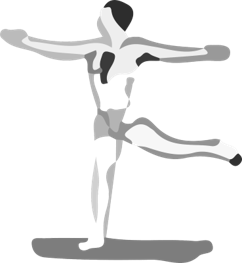
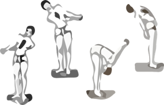
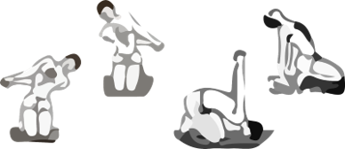

鳥式、戰士式、行動式
會缺乏自信式經過幾次失敗或否定後，可能會產生這樣的負面能量
這透過這些動作做調整
也可以經由正念(自我暗示)的方式來調整，但小心不要過度，這樣會變自大
1. 鳥式
當手向前伸時，象徵勇往前進，可以曾強我們努力的特質
鳥式練習方法:
直立，左手向前伸，右手向後伸，兩手手臂須與地面平行，將右腿盡量往後伸，盡量試著以右腳拇趾觸碰右手(實際上不會碰到)，身體不可彎曲，但右腿可稍微向上彎。這個姿勢像一隻飛鳥。時間半分鐘。然後換邊練習。左右個練習四次。
2. 行動式
憤怒是因為火能量太多，我們可以透過行動式來昇華火能量，轉變成我們成長的動力
練習方法:
行動式的第一部分是立姿，第二部分是跪姿。立姿練習時對臍輪與心輪的活化有較大的幫助，跪姿對喉輪與眉心輪的活化有更好的幫助。
第一部分
站直，將兩手置於背後，十指交叉互握，手掌緊貼，但不過度緊繃。
a．上身往左彎並慢慢吐氣，雙手向右伸，保持此姿勢不動，並閉氣八秒，當身體向左彎時，左手臂須與背部接觸，閉氣時亦如此，八秒後然後吸氣恢復原姿勢。
b．向右彎重複上述動作，即上身右彎，雙手向左伸，閉氣八秒，然後吸氣恢復原姿勢。
c．上身向前彎並緩緩吐氣，同時慢慢將互握的雙手舉起，頭愈低愈好，膝蓋不可彎曲，保持此一姿勢不動並閉氣八秒。
d．吸氣時，身體逐漸恢復原姿，並繼續向後彎，頭與頸向後仰，雙手互握筆直朝下，保持此姿勢不動並閉氣八秒，然後吐氣，恢復原姿勢。
注意事項：四種方向彎曲時，須注意肚臍以下皆保持不動。
第二部分
跪著坐在腳後跟上，腳趾須朝前，並且肚臍以下不可彎曲。
a．上身往左彎並慢慢吐氣，雙手向右伸，保持此姿勢不動並閉氣八秒，然後吸氣恢復原姿勢。記住當身體向左彎時，左手臂須與背部接觸，閉氣時亦如此。
b．向右彎重複上述動作，即上身右彎，雙手向左伸，閉氣八秒，然後吸氣恢復原姿勢。
c．上身向前彎並緩緩吐氣，鼻子與額頭須著地同時慢慢將互握的雙手舉起，保持此一姿勢不動並閉氣八秒。
d．吸氣時，身體逐漸恢復原姿，並繼續向後彎，頭與胸向後仰，互握的雙手須輕觸腳後跟或地板，並支撐一部分體重。
第一、二部分各做一次為一回，此式須練習四回。